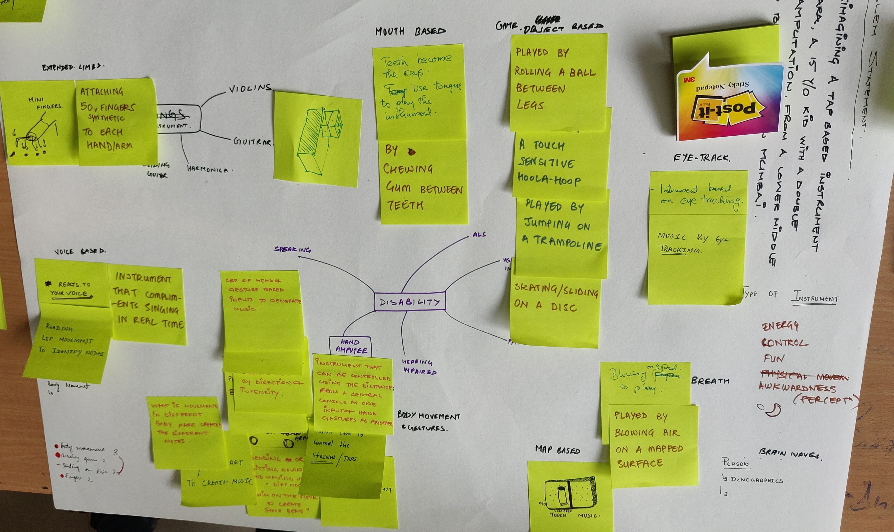
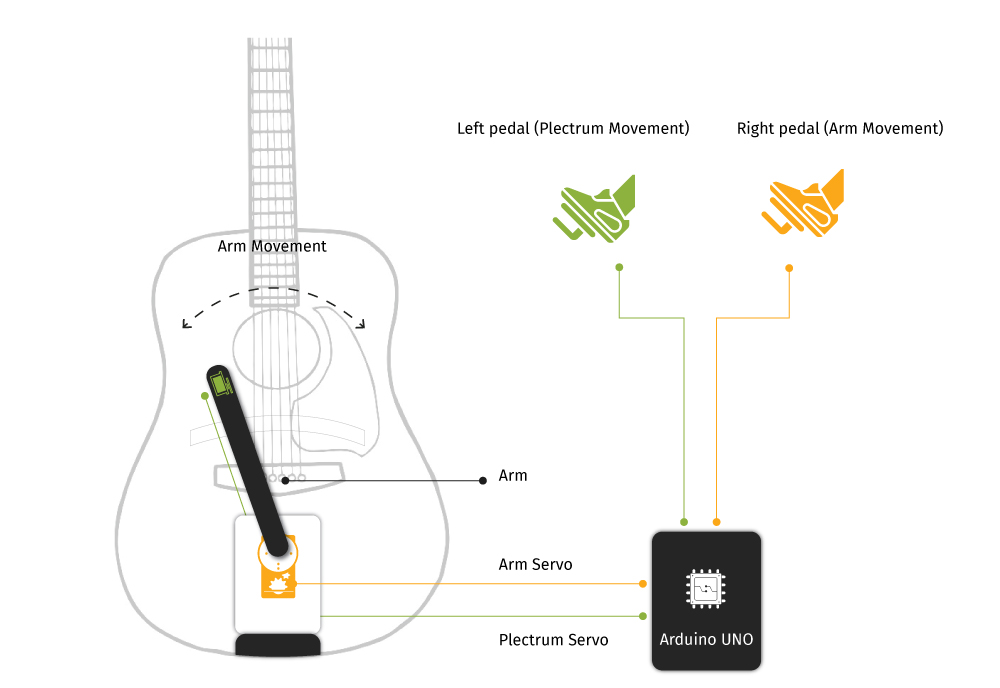

Abstract
The goal of our project was to create a guitar accessory that includes single-hand amputees in the user-base of guitar players and shoppers. The accessory is meant to help the user learn to play using any guitar available to them, using a single hand.
Brainstorming
We started by outlining a few types of musical instruments, types of disabilities, and types of individuals for whom we could design. After debating it as a group we decided to go with: “Reimagining a tap-based musical instrument for Tara, a 15-year-old double hand-amputee, who comes from a lower-middle class household.” We then mapped out many ideas for the same.
Some of our more interesting ones were:
1. Game-object based instrument
These included instruments played by using touch-sensitive hoola-hoops, rolling a ball between her feet, skating/sliding around on a disc.
2. Body movement
Instrument played by dancing between mapped sensors, parts of instrument mapped to different parts of her body, etc.
3. Voice-enabled
An instrument that could react to her singing voice by weaving a complimentary melody around it, or an instrument that reacts to speech input
 We narrowed down the scope and defined the diability for which we wanted to design and modify the instrument for.4. Mouth-based
Played by chewing a gum sounds that could be stretched and manipulated using the shape of the gum. Another one was an instrument mapped to her teeth so that she might be able to play it by sliding her tongue over her teeth.
5. Breath-based
Blowing air through a pipe onto a mapped surface, or using the air pressure through a pipe to fuel the intensity of the sound created by an instrument
6. Others
Using prosthetics with mini fingers, using 50 synthetic fingers on each hand, using eye-tracking.
We then presented these ideas to the other workshop members and also to some of Vaibhav’s friends who were differently-abled. This gave us some insight into our own thought process and how it could be made better.
Approach towards designing for disability
While as designers, it might be tempting to design a brand new instrument with different interactions, the goal of designing for differently-abled users in many cases is to allow them to access conventional instruments. This creates a level-playing field for all, allows collaboration and cultural inclusivity, and is also more accessible when it comes to availability of parts and equipment.
Design for the intangible experience of the instrument
While the initial approach was to make the instrument useful or therapeutic in some way, we realised that there are other experiences that we could specifically design for, for example the social and emotional effects of being involved in the culture surrounding an instrument. Could a person with a hand-amputation be able to play his favorite song on an electric guitar with a similar level of ease as a temporarily-abled individual?
Problem statement
The final problem statement we chose was “Design an accessory for an electric guitar that enables Ram, a single-hand amputee who loves The Beatles to learn to play his favorite song ‘Hey Jude’”
Design Process
Discuss possible ideas > Secondary research > Finalize idea > Paper prototyping > Testing > Material prototyping
We decided to design a solution for the ‘strumming’ hand, assuming that the user would use his existing hand for playing the chords/notes.
The initial solutions included a digital interface in place of the frets (automatic/digital strumming), a responsive prosthetic arm (strumming using muscle contractions), a hexagonal guitar with concentric strings (easy to access all the frets without moving the arm too much) and a mechanical arm attached to the guitar which is played by using a pedal (strumming in real-time using the foot).
The idea that we chose was the pedal-controlled strumming since we wanted the user to have control over the rhythm of the strumming in real-time. Also, the idea was to help the user learn to play a guitar and this accessory was not meant for professional playing.
Paper prototyping
We used sunboard and paper in order to make a stand for the arm on the guitar. The setup consists of a clamp that can be used to attach the accessory to any guitar. On this clamp is a slider on which the arm is placed. There is a guide to support the movement of the arm.
The arm is mounted on a servo motor which is connected to the pedal via an arduino. The pedal has a potentiometer on the hinge which controls the servo motor.
Material prototyping
After testing the paper prototype we laser cut an MDF sheet to build the electronic arm. The pedal was 3D modeled and 3D printed, and then assembled with a spring attached to the hinge.
 System mechanism augmneted on the guitarArduino Code
#include <Servo.h> Servo myservo, plec; // create servo object to control a servo for the arm and the plectrum int flag=0; int potpin = 0; // analog pin used to connect the potentiometer int val; // variable to read the value from the potentiometer const int buttonPin = 2; int buttonState = 0; void setup() { myservo.attach(5); pick.attach(9); // attaches the servo on pin 9 to the servo object pinMode(buttonPin, INPUT); Serial.begin(9600); } void loop() { val = analogRead(potpin); Serial.println(val); // reads the value of the potentiometer (value between 0 and 1023) val = map(val, 0, 100, 30, 0); // maps the pedal movement to the arm movement flag = digitalRead(buttonPin); Serial.println(val); if(flag!=0) { plec.write(0); //sets the plectrum on the strings for one way strumming myservo.write(val); delay(15); } else { pleck.write(40); //sets the plectrum off the strings for one way strumming myservo.write(val); delay(15); } }
Design challenges
Ease of use
Using the pedal should not be too labor-intensive or require too much dexterity since we are not used to performing complex actions with our feet. Initial ideas included:
- A rotating disc under the heel so that the user can strum by sliding the foot left and right
- Using the big toe to slide up and down on a sensor
- Reappropriate the foot-pedal used by guitarists (to control amplifier volume, treble etc.) for strumming purposes We went with the last solution since it already is being used by guitarists and it is also easy to use it while standing up.
Strumming Vs Plucking Individual strings
One of the main points of discussion was, how does this pedal allow users not only to strum but also pluck individual strings? There were a number of solutions we discussed, some of them are:
- Attach a sliding pad (with buttons) to the neck of the guitar which the user can control using his thumb. Each button is linked to an individual string. The problem with this was that ergonomically it would be difficult for the hand to touch the guitar frets with the fingers and also select buttons with the thumb. It would also be cognitively difficult to perform both actions with one hand.
- A more complex idea was to allow the foot-pedal to rotate sideways and use a needle at the tip of the pedal to select strings. For example, if there were 7 buttons at the top of the pedal which could be pressed by the needle: “All strings”, “string 1”, “string 2”.. And so on. This would allow the user to pick individual strings using his foot. This mechanism required a lot of physical dexterity on the part of the user, and we were not sure about its learning curve.
- Use an engage or disengage button on the pedal (or on a different pedal). This will allow the arm to disengage and hover over the strings without touching them. The user can use this to ‘engage’ with different strings individually without strumming the others. This is the idea that we took forward for the final prototype.
What problem are we solving?
While doing secondary research on the topic, we found videos of single-hand amputees who had found a way to attach the plectrum to the elbow of their amputated arm and strum the guitar. There are videos of arm-amputees playing the guitar perfectly using just their feet and toes. With the current state of affordable prosthetics, there is some scope for a user to do basic strumming.
So is it really a problem that needs to be solved? While we were designing the accessory, we regularly found ourselves faced with this question. However, these existing solutions had some constraints, i.e. the plectrum on elbow required the user to have an elbow, while playing a guitar with the feet required the user to overcome a steep learning curve, and prosthetics did not account for the wrist movement required for strumming. We found that the design we came up with did not have too many constraints as it was designed specifically for a single-handed user. While this design is not as fine-tuned, it is one way to start thinking about access to guitar-playing for the differently-abled.
Final Prototype